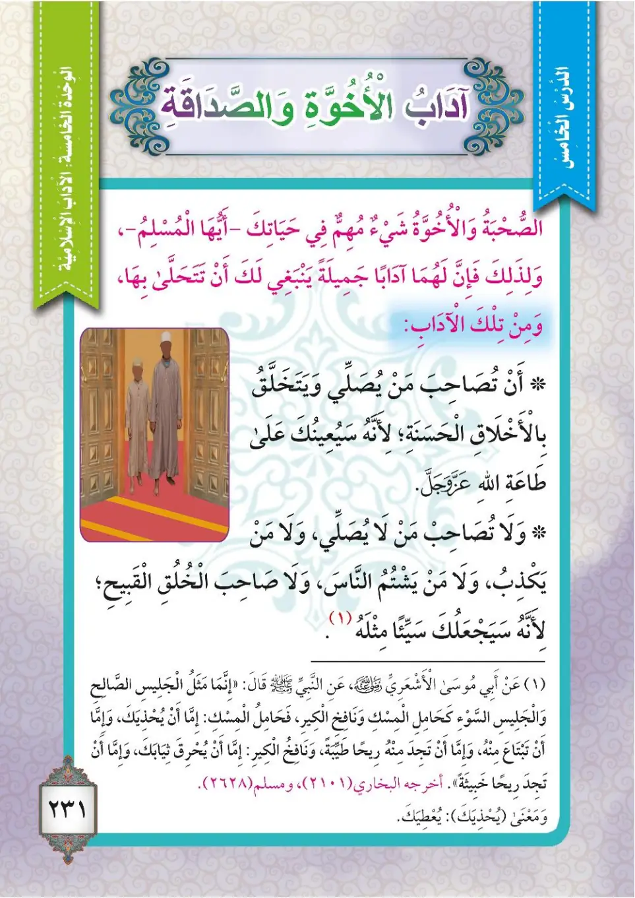
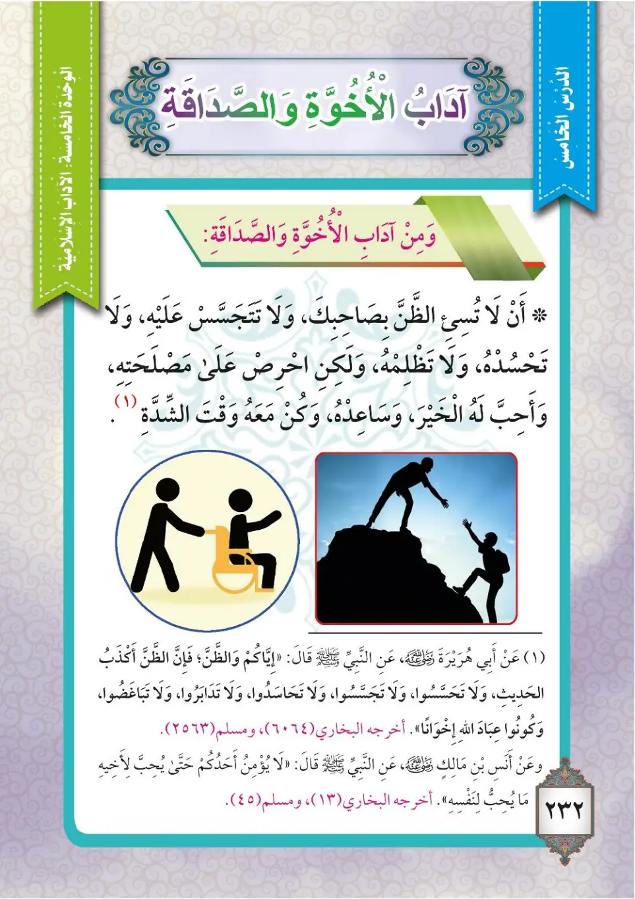
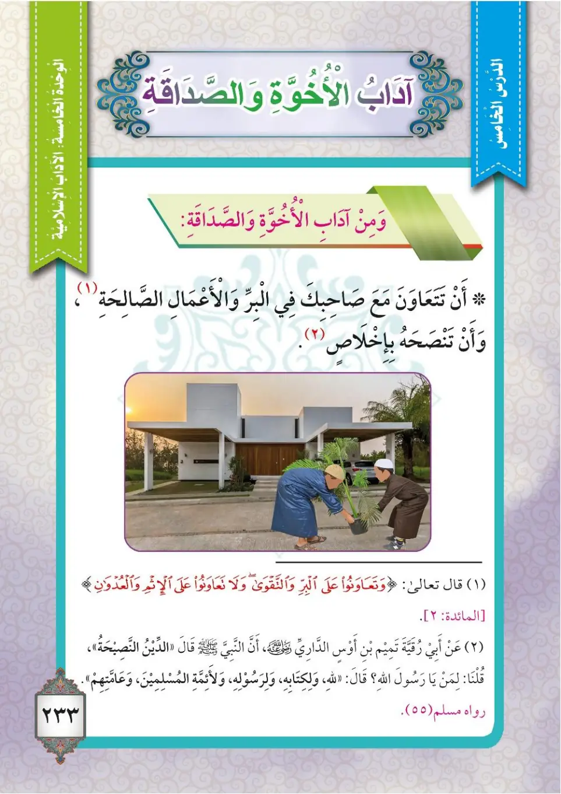

Stage 3·المرحلة الثالثة⭐ Unit 1
آدَابُ الأُخُوَّةِ وَالصَّدَاقَةِ Manners of Brotherhood and Friendship
From the Textbookpp. 232–234



الصحبةُ والأخوَّةُ شيءٌ مهمٌّ في حياةِ المسلمينَ، ولذلكَ فلَهما آدابٌ جميلةٌ ينبغي أنْ تتحلّى بها، ومن تلكَ الآدابِ: ١- أنْ تصاحبَ مَن يُصلِّي ويَتخلَّقُ بالأخلاقِ الحسنةِ؛ لأنَّهُ سيعينُكَ على طاعةِ اللهِ عزَّ وجلَّ. وقال النبيُّ ﷺ:
As-suhbatu wal-ukhuwwatu shay'un muhimmun fi hayati al-muslimina, wa li-dhalika falahuma adabun jamilah yanbaghi an tatahallatha biHa, wa min tilka al-adabi: 1- an tusahiba man yusalli wa yatakhallaqu bil-akhlaqi al-hasanah; li'annaHu sa-yu'inuka 'ala ta'ati Allahi 'azza wa jalla. Wa qala an-nabiyyu ﷺ:
Companionship and brotherhood are very important in a Muslim's life, and therefore they have fine manners that you should adopt. From those manners:<br>1. Accompany those who pray and adopt good manners, because they will help you obey Allah the Exalted. The Prophet ﷺ said:
நட்பும் சகோதரத்துவமும் முஸ்லிமின் வாழ்வில் மிக முக்கியமானவை; அதற்கு அழகிய நடத்தைகள் உண்டு:<br>1. தொழுபவர்களையும் நல்ல ஒழுக்கம் உள்ளவர்களையும் நட்பாகக் கொள்வது; ஏனெனில் அவர்கள் அல்லாஹ்வுக்குக் கீழ்ப்படிய உதவுவார்கள். நபி ﷺ கூறினார்கள்:
عن أبي موسى الأشعريّ رضي الله عنه قال: قال رسولُ اللهِ ﷺ: «مَثَلُ الجَلِيسِ الصَّالِحِ وَالجَلِيسِ السُّوءِ كَحَامِلِ المِسْكِ وَنَافِخِ الكِيرِ؛ فَحَامِلُ المِسْكِ إِمَّا أَنْ يُحْذِيَكَ، وَإِمَّا أَنْ تَبْتَاعَ مِنْهُ، وَإِمَّا أَنْ تَجِدَ مِنْهُ رِيحًا طَيِّبَةً، وَنَافِخُ الكِيرِ إِمَّا أَنْ يُحْرِقَ ثِيَابَكَ، وَإِمَّا أَنْ تَجِدَ مِنْهُ رِيحًا خَبِيثَةً». أخرجه البخاريُّ ومسلمٌ.
'An Abi Musa al-Ash'ariyyi radiyallahu 'anHu qala: qala rasulullahi ﷺ: «Mathalu al-jalisi as-saalihi wal-jalisi as-suu'i kahamilil-miski wa nafikhi al-kiri; fahamilul-miski imma an yukh-dhiyaka, wa imma an tabta'a minHu, wa imma an tajida minHu rihan tayyibah, wa nafikhu al-kiri imma an yuhriqa thiyabaka, wa imma an tajida minHu rihan khabithah». Akhrajahu al-Bukhariyyu wa Muslimun.
Abu Musa al-Ash'ari, may Allah be pleased with him, said: The Messenger of Allah ﷺ said: "The example of a good companion and a bad companion is like the carrier of musk and the blower of bellows: the carrier of musk either gives you some, or you buy from him, or you find a good smell from him; while the blower of the bellows either burns your clothes, or you find a foul smell from him." Narrated by Al-Bukhari and Muslim.
அபூ மூஸா அல்-அஷ்அரீ (ரலி) கூறினார்கள்: "நல்ல தோழனுக்கும் தீய தோழனுக்கும் உதாரணம் மணக்கும் நறுமண (கஸ்தூரி) விற்பனையாளரும் கொல்லரின் துருத்தி ஊதுபவரும் போன்றது: நறுமண விற்பனையாளர் உங்களுக்குக் கொடுப்பார் அல்லது அவரிடம் வாங்குவீர்கள் அல்லது அவரிடமிருந்து நல்ல வாசனையைப் பெறுவீர்கள்; துருத்தி ஊதுபவர் உங்கள் ஆடைகளை எரிக்கலாம் அல்லது அவரிடம் தீய வாசனையைப் பெறுவீர்கள்" என்று நபி ﷺ கூறினார்கள். (புகாரி, முஸ்லிம்)
٢- ولا تصاحبْ مَن لا يُصلّي، ولا مَن يكذبُ، ولا مَن يشتُمُ الناسَ، ولا صاحبَ الخلقِ القبيحِ؛ لأنَّهُ سيجعلُكَ مثلَهُ. ٣- ألَّا تظنَّ بصاحبِكَ ظنَّ السَّوءِ، ولا تتجسَّسْ عليهِ، ولا تحسُدْهُ، ولا تظلمْهُ، ولكنِ احرصْ على مصلحتِهِ، وأحبِبْ لهُ الخيرَ، وساعدْهُ، وكُنْ معهُ وقتَ الشدَّةِ. قال رسولُ اللهِ ﷺ:
2- wa la tusahib man la yusalliy, wa la man yakdhibu, wa la man yashtum an-nasa, wa la sahiba al-khuluqi al-qabih; li'annaHu sa-yaj'aluka mithlaHu. 3- alla tazunna bi-sahibika zanna as-suw'i, wa la tajasass 'alayHi, wa la tahsudHu, wa la tazlimHu, wa lakiniHris 'ala maslahatiHi, wa ahbib laHu al-khaira, wa sa'idHu, wa kun ma'aHu waqta ash-shiddah. Qala rasulullahi ﷺ:
2. Do not accompany those who do not pray, those who lie, those who insult people, or those of bad character, because they will make you like them.<br>3. Do not think evil of your companion, do not spy on him, do not envy him, and do not wrong him. Rather, seek his welfare, wish good for him, help him, and stand by him in times of hardship. The Messenger of Allah ﷺ said:
2. தொழாதவர்கள், பொய் சொல்பவர்கள், மக்களை இகழ்பவர்கள், தீய ஒழுக்கம் உள்ளவர்களை நண்பர்களாகக் கொள்ளக்கூடாது; ஏனெனில் அவர்கள் உங்களையும் அவர்கள் போல் மாற்றுவர்.<br>3. உங்கள் தோழனைப் பற்றி தீய எண்ணம் வைக்கக்கூடாது; வேவு பார்க்கக்கூடாது; பொறாமை கொள்ளக்கூடாது; அநீதி செய்யக்கூடாது. மாறாக அவர் நலத்தை விரும்பி, நன்மையை விரும்பி, உதவி செய்து, கஷ்ட காலத்தில் அவருடன் நிற்க வேண்டும். நபி ﷺ கூறினார்கள்:
عن أبي هريرةَ رضي الله عنه أنَّ رسولَ اللهِ ﷺ قال: «إِيَّاكُمْ وَالظَّنَّ، فَإِنَّ الظَّنَّ أَكْذَبُ الحَدِيثِ، وَلَا تَحَسَّسُوا، وَلَا تَجَسَّسُوا، وَلَا تَحَاسَدُوا، وَلَا تَدَابَرُوا، وَلَا تَبَاغَضُوا، وَكُونُوا عِبَادَ اللهِ إِخْوَانًا». أخرجه مسلمٌ.
'An Abi Hurairata radiyallahu 'anHu anna rasulallahi ﷺ qala: «Iyyakum waz-zanna, fa-inna az-zanna akdhabu al-hadith, wa la tahassasu, wa la tajasasu, wa la tahasadu, wa la tadabaru, wa la tabaghadu, wa kunu 'ibadallahi ikhwanan». Akhrajahu Muslimun.
Abu Hurairah, may Allah be pleased with him, narrated that the Messenger of Allah ﷺ said: "Beware of suspicion, for suspicion is the most deceitful of speech. Do not try to find out, do not spy on each other, do not envy one another, do not turn your backs on one another, and do not hate one another; rather, be servants of Allah, as brothers." Narrated by Muslim.
அபூ ஹுரைரா (ரலி) கூறினார்கள்: "சந்தேகத்தைத் தவிருங்கள்; சந்தேகம் மிகப் பொய்யான பேச்சாகும். ஆராய்ந்து துருவ வேண்டாம்; ஒருவரையொருவர் வேவு பார்க்க வேண்டாம்; பொறாமை கொள்ள வேண்டாம்; புறம் திரும்ப வேண்டாம்; வெறுக்க வேண்டாம்; அல்லாஹ்வின் அடியார்களாக சகோதரர்களாக இருங்கள்" என்று நபி ﷺ கூறினார்கள். (முஸ்லிம்)
وعن أنسٍ رضي الله عنه عن النبيِّ ﷺ قال: «لَا يُؤْمِنُ أَحَدُكُمْ حَتَّى يُحِبَّ لِأَخِيهِ مَا يُحِبُّ لِنَفْسِهِ». أخرجه البخاريُّ ومسلمٌ.
Wa 'an Anasin radiyallahu 'anHu 'ani-nnabiyyi ﷺ qala: «La yu'minu ahadukum hatta yuHibba li-akhiHi ma yuHibbu li-nafsiHi». Akhrajahu al-Bukhariyyu wa Muslimun.
Anas, may Allah be pleased with him, narrated that the Prophet ﷺ said: "None of you truly believes until he loves for his brother what he loves for himself." Narrated by Al-Bukhari and Muslim.
அனஸ் (ரலி) கூறினார்கள்: "தம் சகோதரருக்குத் தாம் விரும்புவதையே விரும்பும் வரை உங்களில் எவரும் முழு நம்பிக்கையாளராக மாட்டார்" என்று நபி ﷺ கூறினார்கள். (புகாரி, முஸ்லிம்)
٤- أنْ تتعاونَ مع صاحبِكَ في البرِّ والأعمالِ الصالحةِ، وأنْ تنصحَهُ بإخلاصٍ. قال تعالى: ﴿وَتَعَاوَنُوا عَلَى الْبِرِّ وَالتَّقْوَىٰ وَلَا تَعَاوَنُوا عَلَى الْإِثْمِ وَالْعُدْوَانِ﴾ (المائدة: ٢).
4- an tata'awana ma'a sahibika fi al-birri wal-a'mali as-saalihah, wa an tansuHaHu bi-ikhlasin. Qala ta'ala: «Wa ta'awanu 'ala al-birri wat-taqwa wa la ta'awanu 'ala al-ithmi wal-'udwan» (Al-Ma'idah: 2).
4. Cooperate with your companion in righteousness and good deeds, and give him sincere advice. Allah the Exalted said:<br>"And cooperate in righteousness and piety, but do not cooperate in sin and aggression" (Al-Ma'idah: 2).
4. நன்மையிலும் நல்ல செயல்களிலும் உங்கள் தோழனுடன் ஒத்துழைப்பதும், அவருக்கு நேர்மையாக நல்லுபதேசம் வழங்குவதும். அல்லாஹ் கூறினான்: "நன்மையிலும் இறையச்சத்திலும் ஒத்துழையுங்கள்; பாவத்திலும் அநீதியிலும் ஒத்துழைக்காதீர்கள்" (5:2).
عن أبي رُقَيَّةَ تَميمِ بنِ أوسٍ الدّاريّ رضي الله عنه أنَّ النبيَّ ﷺ قال: «الدِّينُ النَّصِيحَةُ»، قلنا: لمنْ يا رسولَ اللهِ؟ قال: «لِلَّهِ، وَلِكِتَابِهِ، وَلِرَسُولِهِ، وَلِأَئِمَّةِ المُسْلِمِينَ وَعَامَّتِهِمْ». رواه مسلمٌ.
'An Abi Ruqayyata Tamimi-bni Awsid-Dariyyi radiyallahu 'anHu anna an-nabiyya ﷺ qala: «Ad-dinu an-nasihah», qulna: liman ya rasulallah? Qala: «Lillahi, wa li-kitabiHi, wa li-rasuliHi, wa li-a'immati al-muslimina wa 'ammatiHim». RawaHu Muslimun.
Abu Ruqayyah Tamim ibn Aws ad-Dari, may Allah be pleased with him, narrated that the Prophet ﷺ said: "Religion is sincerity (advice)." We asked: For whom, O Messenger of Allah? He said: "For Allah, His Book, His Messenger, the leaders of the Muslims, and their common people." Narrated by Muslim.
அபூ ருகய்யா தமீம் இப்னு அவ்ஸ் அத்-தாரீ (ரலி) கூறினார்கள்: "மார்க்கம் நல்லுபதேசமே" என்று நபி ﷺ கூறினார்கள். "யாருக்காக, அல்லாஹ்வின் தூதரே?" என்றோம். "அல்லாஹ்வுக்காக, அவன் வேதத்திற்காக, அவன் தூதருக்காக, முஸ்லிம்களின் தலைவர்களுக்காக, மற்றும் அவர்கள் பொதுமக்களுக்காக" என்று கூறினார்கள். (முஸ்லிம்)